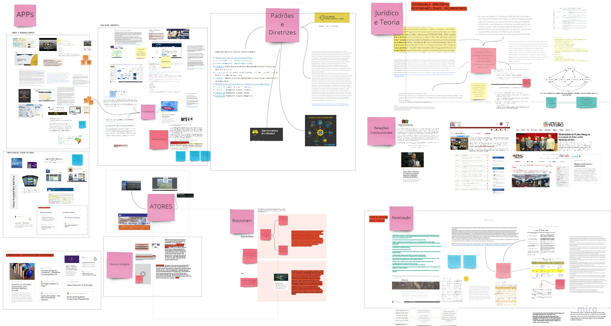

Bússola Baía
da Guanabara

Ao longo de 2019, o Grupo de Atuação Especializada em Meio Ambiente (GAEMA) estabeleceu acordos com o Governo do Estado do Rio de Janeiro (ERJ) e a Companhia de Águas e Esgotos (CEDAE) para retomar as ações de recuperação da Baía da Guanabara. As obras previstas no acordo fazem parte dos programas de despoluição da Baía criados na década de 1990 e estavam paralisadas desde a crise financeira que atingiu o estado, em 2016.
Para viabilizar o monitoramento desses acordos, o GAEMA procurou o apoio do Laboratório de Inovação do MPRJ (Inova_MPRJ). O objetivo era criar soluções inovadoras que permitissem acompanhar o andamento de nove obras, em cinco municípios da Região Metropolitana do Rio de Janeiro.
O projeto foi inserido no novo modelo de planejamento estratégico do Laboratório, que prevê dois líderes para cada projeto e ciclos curtos de trabalho. Para um primeiro ciclo de entregas, o Inova_MPRJ conduziu o reconhecimento das tecnologias de ponta em controle de obras de infraestrutura, bem como a definição de indicadores prioritários para apontar riscos de descumprimento do acordo. Além disso, o Laboratório auxiliou a elaboração de requisições dos dados necessários.
Futuramente, espera-se que a coleta desses dados seja contínua, alimentando um sistema de alertas e tomada rápida de decisão voltado aos membros do MPRJ. O monitoramento dos indicadores selecionados também deve estar disponível para a sociedade civil, favorecendo o controle social das políticas ambientais no estado.
desafios e oportunidades
Há décadas, a Bacia Hidrográfica da Baía de Guanabara (BHBG) tem sido palco de intervenções com custo vultuoso e poucos resultados. Mesmo com o Programa de Despoluição da Baía de Guanabara (PDBG), iniciado em 1994, recebendo cerca de R$2,5 bilhões em financiamento do BID e da Agência de Cooperação Internacional do Japão, permaneceu a situação de degradação dos rios da região.
O Governo do Estado do Rio de Janeiro (ERJ) recebeu nova injeção de investimentos em 2011, dessa vez com o Programa de Saneamento Ambiental dos Municípios do Entorno da Baía de Guanabara (PSAM), que sucedeu o PDBG a partir de 2006. O objetivo era chegar aos Jogos Olímpicos do Rio de 2016 tratando 16 mil litros de esgoto por segundo – oito vezes mais do que a capacidade existente até 2007.
Por diversas razões – em especial atrasos no pagamento das contrapartidas -, boa parte das obras planejadas não ficaram prontas no prazo previsto. Em 2016, o estado do Rio de Janeiro entrou em uma profunda crise fiscal, praticamente congelando todos os investimentos em curso. As Estações de Tratamento de Esgotos (ETEs) que chegaram a ser concluídas ficaram operando abaixo da capacidade, pela falta de coletores para trazer o esgoto desde os bairros.
Em julho de 2019, o MPRJ estabeleceu um Termo de Ajustamento de Conduta com o Governo do Estado, prevendo a retomada dos investimentos em saneamento básico no entorno da Baía. Em setembro, o acordo foi complementado por um Termo de Repactuação de Mediação com a CEDAE. Ambos foram firmados no âmbito de uma Ação Civil Pública movida pelo GAEMA em 2007, e definiam prazos e condições para o término de obras consideradas prioritárias para a recuperação da BHBG.
Esses acordos previam algumas salvaguardas relacionadas à prestação de contas sobre o andamento das obras. Porém, dado o histórico de descumprimento das metas do PDBG e do PSAM, os membros do GAEMA consideraram crítico que o MPRJ desenvolvesse estratégias inovadoras para acompanhar o cumprimento das obrigações pelo ERJ e pela CEDAE.
A demanda do GAEMA se insere em um contexto mais amplo de tentativa de retomar obras essenciais que estão paralisadas em todo país. Em 2019, um levantamento junto aos Tribunais de Contas nos estados e municípios encontrou 2.555 empreendimentos suspensos ou paralisados, dos quais 15,2% da área de saneamento.
Procurado para prototipar uma solução para o desafio, o Laboratório de Inovação enxergou uma oportunidade de pôr o MPRJ em contato com o que se está produzindo de melhor para identificar as principais causas que podem levar ao atraso ou paralisação de obras de infraestrutura de grande interesse público.
visãoA visão que orientou o desenvolvimento do projeto reconhece, em toda iniciativa de monitoramento, um custo de implantação que precisa ser levado em conta na delimitação da solução. Da mesma forma, pressupõe um processo de priorização criterioso, que identifique os indicadores essenciais para orientar a execução e o controle das políticas públicas.
Em todos os produtos do projeto Bússola, o objetivo final é otimizar o tempo e a capacidade de tomada de decisão do membro do MP, gestor ou cidadão que consome os painéis e alertas gerados. No Bússola_Baía de Guanabara, o intuito é priorizar o olhar e promover ciclos rápidos e incrementais de coleta e integração de diferentes fontes de dados sobre as obras selecionadas. Ao final, espera-se oferecer ao usuário final apenas as informações de que necessita para agir em caso de descumprimento iminente dos acordos estabelecidos - sempre começando por onde o risco é maior e o custo de informação/ação for menor.
resultados diretos
Como resultado de um primeiro ciclo de desenvolvimento, o Inova_MPRJ selecionou um total de 54 indicadores preliminares, sugeridos e priorizados por meio de técnicas de design de serviços, pesquisa de mesa e entrevista com especialistas. Além disso, elaborou oito minutas de ofício requisitando os dados necessários ao cálculo desses indicadores para duas das obras, definidas como pilotos do projeto. Os modelos de ofícios sugeridos também se encontram reproduzidos para consulta na seção “Anexos”. As requisições sugeridas e os indicadores selecionados são mostrados nas tabelas a seguir:
Companhia de Águas e Esgotos do Estado do Rio de Janeiro (CEDAE)
Unidade Executora do Programa de Saneamento dos Municípios do Entorno da Baíada Guanabara (UEPSAM)
Construtora Passarelli Ltda.
_Projeto Executivo das obras de construção do Tronco Coletor Faria Timbó;
_Nomes e registros profissionais dos responsáveis técnicos, ARTs e Registros de Responsabilidade Técnica (RRTs) relativos às obras de construção do Tronco Coletor Faria Timbó;
_Extração de todos os sistemas e bancos de dados utilizados para a gestão – financeira, de material e estoques, de pessoal, de cronograma e de engenharia – das obras de complementação do tratamento secundário do Tronco Coletor de Esgotos Faria Timbó;
_Notas Fiscais eletrônicas relativas às compras de equipamentos, materiais e serviços para as obras de construção do Tronco Coletor;
_Notas Fiscais eletrônicas pela empreiteira em favor da contratante;
_Número e comprovante de matrícula das obras de construção do Tronco Coletor Faria Timbó no Cadastro Nacional de Obras (CNO).
ENIMONT – Empresa Nacional de Instalação e Montagem Ltda.
_Projeto Executivo das obras de complementação do Sistema Paquetá;
_Nomes e registros profissionais dos responsáveis técnicos, ARTs e Registros de Responsabilidade Técnica (RRTs) relativos às obras de complementação do Sistema Paquetá;
_Extração de todos os sistemas e bancos de dados utilizados para a gestão – financeira, de material e estoques, de pessoal, de cronograma e de engenharia – das obras de complementação do Sistema Paquetá;
_Notas Fiscais eletrônicas relativas às compras de equipamentos, materiais e serviços para as obras de complementação do Sistema Paquetá;
_Notas Fiscais eletrônicas pela empreiteira em favor da contratante.
resultados indiretos
Além dos resultados diretos esperados e produzidos neste primeiro ciclo, o processo de redefinição e de aprofundamento do desafio gerou diversos resultados indiretos relevantes para o futuro do projeto e para o MPRJ, enquanto instituição.
Levantamento das melhores práticas em monitoramento de obras
A equipe do Laboratório conduziu atividades com parceiros e entrevistas com especialistas para identificar as soluções mais promissoras para acompanhar e fiscalizar os pontos críticos no desenvolvimento de projetos de engenharia. Baseados em experiências nacionais e internacionais, do setor público e privado, esses achados estão reunidos na seção Boas Práticas deste relatório.
Mobilização de atores e fortalecimento de redes
As etapas de Pesquisa de Mesa e de definição de indicadores envolveram consulta e participação de atores com experiência técnica, bem como institucional ou socialmente relevantes, em nível regional, nacional e internacional. Esses contatos continuarão a ser fundamentais nas próximas etapas do desenvolvimento do projeto.
Disseminação do método de trabalho e desenvolvimento de capacidades dos clientes e parceiros
O projeto Bússola_Despoluição da Baía de Guanabara foi o primeiro a ser conduzido inteiramente segundo o Fluxo de Transformação do Inova_MPRJ. Em todas as etapas, o time de parceiros internos esteve a par do ponto em que se encontravam e da visão geral do projeto. O objetivo é que clientes e parceiros entendam e participem ativamente das técnicas e ferramentas propostas, de modo a poder replicá-las em outros espaços.
Identificação dos principais riscos ao andamento de obras públicas
O Inova_MPRJ realizou uma revisão de levantamentos e estudos indicando as causas mais recorrentes de atrasos, paralisações e suspensões em obras públicas no estado e no país. Essa pesquisa embasou muitas das conclusões relatadas na seção “Aprendizados”. Espera-se que elas sejam úteis para orientar futuras intervenções dos órgãos de controle na reativação e acompanhamento de obras de saneamento básico e de infraestrutura em geral.
o inícioO Bússola _ Despoluição da Baía de Guanabara foi a primeira chance de colocar em prática todos os passos do Fluxo de Transformação proposto pelo Inova_MPRJ. Enquanto o piloto da Bússola _ Gestão Hospitalar possibilitou a própria concepção do Fluxo, o projeto da Baía foi a chance de testar e amadurecer as diferentes etapas do método.
O projeto permitiu consolidar as etapas do Fluxo de Transformação - proposta do Laboratório para uma nova forma de atuação do MPRJ. Ao colocar em prática as fases, foi possível repensar questões, num processo de iteração das atividades. A experiência também permitiu reunir uma série de boas práticas sobre controle de obras públicas e possível atuação do MPRJ. Reunimos aqui alguns desses aprendizados e, na próxima seção, um breve mapeamento de boas práticas.
A primeira tarefa do Inova_MPRJ foi entender o que o Grupo de Atuação Especializada (GAEMA) tinha em mente ao solicitar o auxílio do Laboratório. Para isso, a equipe do Inova_MPRJ montou um “Mapa da questão”, buscando levantar as questões técnicas, legais, políticas, ambientais, socioeconômicas e institucionais que permeiam o tema da despoluição da Baía de Guanabara.
Para a criação do canvas do projeto - a exploração coletiva da questão -, o Inova_MPRJ convidou o GAEMA, GATE, CENPE, CADG e o CAO Meio Ambiente para uma atividade no Laboratório. Utilizando técnicas de design de serviços e com apoio da plataforma Miro, foi realizado um levantamento coletivo de questões pertinentes. A ideia era cobrir principais riscos, custos, projetos parecidos, caminhos para comunicação e métricas de sucesso.
A segunda parte da atividade foi a elaboração de um "O que é" do desafio: um momento importante para definir o escopo de atuação de um primeiro ciclo do projeto.
Segundo o grupo, “O que é?” do projeto envolve "estratégia e ferramentas de monitoramento e comunicação do andamento e dos resultados das ações de recuperação da Bacia Hidrográfica da Baía da Guanabara previstas nos acordos vigentes entre MPRJ, CEDAE e Governo do Estado do Rio de Janeiro".
mapa de atores
De modo a garantir que instituições e órgãos relevantes não seriam deixados de fora das discussões ou etapas do processo, a equipe do Laboratório, junto com o GAEMA, elaborou um Mapa de Atores. Inspirada nos mapas de stakeholders populares na área privada, a atividade incentiva a pensar quem tem influência ou pode ser influenciado pelo projeto.
Assim, em três círculos concêntricos foram alocados os atores que fazem parte do time, os atores diretamente relacionados e os atores indiretamente relacionados, separados entre aqueles que participam ocasionalmente ou de maneira fixa.
GAEMA: Grupo de Atuação Especializada em Meio Ambiente
GATE: Grupo de Apoio Técnico Especializado
CENPE: Centro de Pesquisa
CADG: Coordenadoria de Análises, Diagnósticos e Geoprocessamento
CAO Meio Ambiente: Centro de Apoio Operacional às Promotorias de Justiça de Meio Ambiente e Patrimônio Cultural
mapa de
atores
“pesquisatona”
Em projetos anteriores do Inova_MPRJ, a etapa da Pesquisa de Mesa – isto é, o reconhecimento das melhores práticas sobre um assunto - era feita apenas pela própria equipe do Laboratório. Para este projeto, decidiu-se por um novo experimento, incluindo o time externo e utilizando técnicas de design de serviços.
Conscientes de que a questão da não conclusão das obras de saneamento na Bacia persiste há décadas, era essencial entender o que já foi feito para solucionar o problema. Para não repetir os erros do passado, nem reinventar a roda, era oportuno conhecer o que já existe de soluções de gestão e tecnologia para desafios similares.
A equipe diretamente envolvida com o projeto, incluindo o GAEMA, GATE, Inova_MPRJ e CAO Meio Ambiente, reúne diversas áreas de conhecimento que poderiam trazer suas visões para pensar o problema e apontar soluções que já têm sido testadas.
Pensando em como otimizar o tempo dos participantes do time e garantir o melhor uso da inteligência coletiva, o Inova_MPRJ optou por realizar uma atividade de dia inteiro de duração, utilizando a técnica Pomodoro. O time interno do projeto e a equipe de Design trabalharam conjuntamente para elaborar uma série de etapas, com métodos de design, focando em pesquisa, organização e geração de “sacadas”(nossa tradução para “insights”). O método buscou otimizar horas de pesquisa individual em uma atividade em grupo que permitiu uma troca dos aprendizados.
Quatro perguntas foram elaboradas para guiar a pesquisa:
Como fiscalizar gastos públicos e obras, usando ciências de dados?

Quais ferramentas tecnológicas já existem para monitorar obras?

Quais as tecnologias existem para o monitoramento da qualidade ambiental?

Por que as obras públicas não ficam prontas no tempo e no orçamento estimado?
Para realizar a atividade, duas ferramentas funcionaram como apoio:
Hypothes.is
Ao longo das rodadas de pesquisa, os participantes anotavam e indexavam as referências encontradas em um grupo único do Hypothes.is.
Miro
Já o conteúdo visual era replicado no Miro, que também serviu para agregarmos as certezas, dúvidas e conclusões em uma etapa seguinte da atividade.
painel compilado do conteúdo produzido
Esse mapeamento serviu de base para a fase seguinte do Fluxo, que exige entrevistas com especialistas e mobilização de atores externos.
Para minimizar o cansaço e criar motivações constantes ao longo do dia, a equipe de Design do Inova_MPRJ decidiu usar a gamificação - ideia de transformar a atividade em jogo e oferecer pontos pelas tarefas completadas. Foram criados brindes (bótons e canecas) para premiar os participantes, mediante a contabilização dos pontos.
Os relatos dos participantes na atividade demonstraram o quanto todos enxergavam esse esforço de pesquisa como essencial – embora raramente se dedique tanto tempo a isso no dia a dia. Também ficou claro que a riqueza da atividade está na multidisciplinaridade dos participantes. Afinal, a convivência de diferentes áreas de atuação favorece discussões ricas e linhas de pensamento complementares para pensar o problema.
estrutura

9 participantes

3 equipes

7h de atividade
pontuação

+20 pontualidade

+10 originalidade

+50 organização
resultado

63h de pesquisa

45 pomodoros

8 temas gerados
Quanto ao conteúdo coletado, o saldo final do dia serviu de base para os passos seguintes. Em especial, as certezas e dúvidas apontadas pelos participantes orientaram a escolha dos temas a serem aprofundados na etapa seguinte – a Pesquisa de Mesa.
pesquisa de mesaApós uma revisão dos materiais coletados e dos caminhos apontados pela Pesquisatona, a equipe do Inova_MPRJ delimitou oito temas para aprofundar a pesquisa. O objetivo era obter um entendimento razoável sobre os pontos mais pertinentes ao “O Que É?” do projeto, pensando em como eles seriam aplicáveis a uma eventual solução para os desafios identificados no canvas de projeto.
Os oito temas:
Blockchain e contratos inteligentes
Mercados de predição e métodos para agregar informações dispersas
Campanhas de comunicação
Auditorias baseadas em dados
Internet das Coisas (IoT) e Building Information Modelling (BIM)
Monitoramento com participação cidadã
Geotecnologias e sensoriamento remoto
Por que tantas obras atrasam?
Cada tema ganhou uma parede de pesquisa própria no Miro. Na divisão de quem pesquisaria o quê, a opção foi que cada um estudasse os temas com que tinham menor familiaridade. A lógica foi garantir conclusões o menos enviesadas possível ao final das duas semanas de pesquisa – mesmo que isso implicasse curvas de aprendizado um pouco mais lentas.
Para guiar a pesquisa e a apresentação dos resultados, em cada tema a equipe preencheu 4 seções: hipóteses, sacadas, certezas e dúvidas. Na seção “hipóteses”, o responsável pelo tema buscava tornar transparente, antes da pesquisa, as suposições que já tinha sobre o assunto a partir de conhecimentos prévios. Já as seções “sacadas”, “certezas” e “dúvidas” replicavam as conclusões da Pesquisatona, com espaço para complementações – e mudanças de ideia – vindas do aprofundamento da pesquisa.
Os resultados da pesquisa serviram de base para a seção Boas Práticas, disponível no final deste relatório.
mobilização de atores e diálogos com especialistas
A partir do Mapa de Atores e da Pesquisa de Mesa, foi possível montar um diretório de especialistas e figuras de destaque relacionadas a diferentes temas ligados ao projeto. Durante a fase de aprofundamento da pesquisa, a equipe entrou em contato e conversou com alguns deles.
Quatro conversas sobre os temas de aprofundamento da Pesquisa de Mesa foram feitas: sobre mercados de predição, blockchain, e andamento de obras públicas.
Além reunir contatos que ajudaram a esclarecer temas levantados na Pesquisa de Mesa, o diretório funciona como base para estudos futuros nessas temáticas. Também serviu como base para a seleção de convidados para a fase seguinte do projeto - o Lado Sombrio. Eventualmente, poderá ajudar ainda na divulgação de campanhas de comunicação relacionadas ao projeto.
Vanessa Almeida
Tema: Blockchain e contratos inteligentes
Co-fundadora do BNDES Blockchain Lab
Erick Muzart
Tema: Blockchain e contratos inteligentes
Auditor de Controle Externo no Tribunal de Contas da União.
Equipe da Sub-Secretaria de Controle Especializado
Temas: “Por que tantas obras atrasam?”; Auditorias baseadas em dados
Setor do TCE-RJ responsável pelo controle de obras públicas
Ivan Roberto Ferraz
Tema: Mercados de Predição
Autor da tese “Mercado preditivo: um método de previsão baseado no conhecimento coletivo” (2015)
modelagem causalComo forma de consolidar os conhecimentos adquiridos na Pesquisa de Mesa, o Inova_MPRJ adicionou uma etapa ainda experimental, no contexto do Fluxo de Transformação: produzir um esboço de modelo da interação dos diferentes fatores de andamento de uma obra pública. Seguindo uma abordagem que privilegia a representação visual de relações causais, a equipe criou um diagrama causal ao redor de três questões (variáveis) centrais para o projeto:

Qual será a diferença entre a data de conclusão da obra e a data prevista inicialmente?

Qual será a diferença entre o custo efetivo para concluir a obra e o custo previsto inicialmente?

A execução da obra atenderá as exigências para permitir a sua operação eficiente após a entrega?
Para cada uma dessas variáveis, a equipe procurou resgatar os fatores diretos mais importantes, segundo o material consultado na Pesquisa de Mesa. Em seguida, o Inova_MPRJ realizou diversas rodadas para pensar os fatores indiretos por trás dos já levantados, bem como as relações entre eles.
Em cada rodada, as relações foram representadas graficamente com setas de uma só direção, indicando o sentido da causalidade no modelo. Essa forma de representar ressalta padrões com características interessantes para eventuais análises:
Colisores: fatores com mais de uma causa;
Confundidores: fatores com influências que são comuns a ambos;
Mediador: fatores cuja relação é intermediada por um terceiro.
Na primeira versão do modelo, não foram atribuídos pesos relativos à importância de cada uma dessas relações. Nesse momento, o objetivo do exercício foi apenas visualizar de maneira integral um conjunto de proposições sobre o que explica o sucesso ou insucesso de uma obra pública. O foco era dar transparência aos postulados presentes nas fontes consultadas, tanto para a própria equipe quanto para crítica e revisão externas.
Eventualmente, porém, uma versão revisada desse modelo estaria apta a alimentar ferramentas de análise causal aplicadas a obras de infraestrutura. Nesse caso, seria necessário recolher informações sobre como as relações identificadas se comportam quantitativamente, no universo de observações disponíveis. Com isso, a estimativa de riscos em uma obra dependeria apenas da capacidade de atualizar as crenças embutidas no modelo de acordo com as informações sobre aquele projeto em particular.
lado sombrioDepois do aprofundamento e modelagem dos resultados da pesquisa, chegou um momento muito esperado: o Lado Sombrio. Esse é um momento-chave no projeto Bússola. A ideia do projeto é oferecer, com agilidade, um norte para os promotores e procuradores atuarem em questões prioritárias, com base no monitoramento de indicadores críticos. E o Lado Sombrio serve exatamente para isso: definir quais são esses indicadores, e qual a ordem de prioridade entre eles.
O Inova_MPRJ realizou a primeira edição de um Lado Sombrio em julho de 2019. Desde então, coletou muitos aprendizados e experiências da equipe para aprimorar o método.
A atividade do Lado Sombrio convoca a imaginação para pensar o que podemos fazer de pior na execução de uma política pública. Como ser o pior gestor, e esconder isso de todo mundo? Como permitir e incentivar a corrupção? Como ter o maior desperdício possível de recursos públicos?
A ideia é usar essas respostas para chegar em indicadores – isto é, maneiras de enxergar – capazes de mitigar os riscos mais graves. Em análise de riscos, a produção de um pior cenário possível é extremamente útil para a gestão da situação e planejamento para o futuro. Para enxergar a luz, é preciso imaginar a escuridão.
Parceiros do MPRJ, da sociedade civil organizada, de instituições de pesquisa e do setor privado participaram da atividade. A duração foi de uma tarde, incluindo quatro momentos: “lado sombrio”, “lado da luz”, matriz de riscos e geração de indicadores.
Lado sombrio
No primeiro momento, os participantes fizeram um “um toró de ideias” para mapear o máximo possível de maneiras para atrapalhar a conclusão de uma obra de saneamento, favorecendo o máximo possível de interesses escusos no caminho. O grupo gerou mais de 150 post-its de cenários e possibilidades, divididas em três categorias: técnico, financeiro e gestão.
Lado da luz
O segundo momento serviu para virar a chave. Quais são as soluções que existem – e que não existem – para um(a) gestor(a) evitar e enxergar essas 150 situações? Novamente, o grupo gerou mais de uma centena de respostas.
Matriz de soluções
Em seguida, o grupo transpôs as ideias do “lado da luz” para em uma matriz comparando o custo com o impacto de implantar essas soluções. Nesse caso, o custo inclui valor financeiro, tempo ou dificuldade de desenvolver e implementar uma tecnologia ou processo novo. O impacto é o valor da informação - isto é, o dano que ela evita, em comparação com um cenário em que o pior viesse a acontecer, sem que pudéssemos enxergar.
Geração de indicadores
As soluções que foram posicionadas no quadrante de alto impacto e baixo custo foram selecionadas para a última etapa da atividade. Nela, os participantes foram separados em grupos menores, com cada um com a missão de pensar como uma parte das ideias selecionadas poderiam ser traduzidas em indicadores possíveis de serem mensurados. Para cada ideia, os grupos tentaram propor até seis indicadores, em post-its separados.
Os indicadores gerados ao final de todo esse processo de construção coletiva basearam a etapa seguinte do projeto: o mapeamento entre as possíveis fontes para requisição de dados e os indicadores considerados prioritários.
A atividade trouxe alguns aprendizados. Como imaginado, a inteligência coletiva funciona melhor na diversidade, e é preciso garantir que haja momentos para troca e discussão dos especialistas. Por outro lado, a atividade é cansativa e poderia ser dividida em dois momentos, além de ter um número mais reduzido de participantes – se possível, não mais do que dez.
definição dos indicadoresDurante a análise e síntese do conteúdo produzido no Lado Sombrio, a equipe buscou incorporar aos resultados da atividade outros aspectos levantados durante as etapas de pesquisa e contato com especialistas
Partindo da parede de riscos do “Lado Sombrio”, a equipe analisou e reagrupou os post-its por semelhança. Uma nova matriz – desta vez, dos riscos, e não das soluções – foi montada. Os eixos diziam respeito à gravidade do problema X probabilidade de ele acontecer, e eram divididos em 5 gradações cada: de gravidade muito baixa até muito alta; e o mesmo para a probabilidade de ocorrer.
Das 25 combinações de gravidade e probabilidade, o Inova_MPRJ selecionou os riscos posicionados nos quadrantes considerados mais sérios: probabilidade e gravidade muito altas; probabilidade muito alta e gravidade alta; ou probabilidade alta e gravidade muito alta.
A equipe trabalhou em cima desses 27 post-its selecionados para pensar, num toró de ideias, o Lado da Luz de cada um deles. Aqui, os resultados da Pesquisatona, Pesquisa de Mesa e contato com especialistas forneceram os insumos para a produção de ideias.
A partir da combinação entre os resultados originais do Lado Sombrio e essas novas ideias, a equipe do Laboratório passou a sistematizar uma lista de indicadores prioritários. Nesse processo, a equipe buscou consolidar métricas que permitiriam monitorar mais de um risco identificável como grave e provável, assim como aquelas que podiam ser alimentadas a partir de bases de dados já existentes.
A lista consolidada totalizou 54 indicadores sugeridos. Em seu conjunto, eles cobrem riscos relevantes a praticamente todas as etapas do ciclo de vida de um empreendimento de infraestrutura.
Aspectos cobertos pelos indicadores:
1. Fraudes na licitação e contratação;
2. Histórico das empresas contratadas;
3. Vínculos entre empresas licitantes;
4. Execução financeira do contrato pela Unidade Gestora;
5. Controle de compras e estoques pela contratada;
6. Diferenças entre valores previstos e valores efetivamente gastos;
7. Alterações no cronograma físico e financeiro;
8. Qualidade do projeto básico;
9.Transparência dos dados da contratação e execução da obra.
delimitação do escopoAntes de partir para o teste dos indicadores com empreendimentos reais, era necessário limitar o número de obras que seriam monitoradas nesta etapa do projeto. Afinal, os acordos firmados entre o MPRJ, o ERJ e a CEDAE incluem um total de nove obras. Como o Inova_MPRJ trabalha com projetos piloto, era necessário ajustar o escopo a uma demanda de mão de obra e de processamento de dados compatíveis com a escala de experimento.
Para que os pilotos fossem os mais representativos possíveis, o ideal era que cobrissem extremidades opostas das principais características daquele conjunto de obras. Em especial, deveriam ser diferentes quanto ao contratante (UEPSAM ou CEDAE), ao custo previsto (alto ou baixo), ao porte (grande ou pequena) e ao estágio de andamento (no início ou próxima à conclusão). Pensando nisso, a equipe selecionou duas obras:
_Sistema Paquetá - Ligação à ETE São Gonçalo por Linha de Recalque Subaquática (administrada pela CEDAE): atinge 5-8mil habitantes, beneficiando a Ilha de Paquetá. O custo remanescente está estimado em R$12 milhões, com 86% já concluído;
_Tronco Coletor Faria Timbó (administrado pelo ERJ): atinge 485mil habitantes, beneficiando os bairros de Olaria, Penha, Ramos, Bonsucesso, Inhaúma, Benfica, Del Castilho e Complexo do Alemão. O custo da obra é estimado em R$132 milhões e está no início da construção.
requisição dos dados preliminaresA última etapa conduzida pelo Inova_MPRJ nesta fase do projeto foi a consultoria para obtenção dos dados necessárias ao monitoramento das obras selecionadas como pilotos.
Com a lista consolidada dos indicadores, a equipe do Laboratório buscou cruzar as informações necessárias com as fontes de onde elas precisariam ser requisitadas. Não há um repositório único que reúna dados detalhados sobre contratação e execução obras públicas no Rio de Janeiro e no Brasil. Por isso, essa etapa contou com o conhecimento sobre possíveis fontes de informação adquirido nas etapas da anteriores do projeto.
No total, o Laboratório sugeriu ao GAEMA o envio de oito requisições de dados, além de duas solicitações de análises para a Coordenadoria de Segurança e Inteligência do próprio MPRJ. Entre os destinos das requisições estavam a UEPSAM e a CEDAE (contratantes), a Secretaria Estadual de Infraestrutura e Obras (que conduziu a licitação do Tronco Coletor Faria Timbó) e as empresas responsáveis. Outras instituições, como TCE, CONFEA e SEFAZ também foram incluídas nas sugestões, em razão dos seus bancos de dados relevantes para o controle de obras públicas.
A estratégia de acesso a dados sugerida pelo Laboratório se baseia na prerrogativa do Ministério Público em acessar diretamente bases de dados de interesse público, para apoiar procedimentos em andamento. Em especial, leva em consideração o que diz o artigo 35 da Lei Orgânica do Ministério Público Do Estado Do Rio De Janeiro:
Art. 35 - No exercício de suas funções, cabe ao Ministério Público:
XI - ter acesso incondicional a procedimento instaurado no âmbito da Administração direta e indireta de todos os órgãos ou Poderes, ainda que em curso, e a qualquer banco de dados de caráter público ou relativo a serviço de relevância pública.
Seguindo essa estratégia, ao longo de março de 2020 o GAEMA expediu ofícios a todos os atores indicados pelo Laboratório. Os textos sugeridos pelo Inova_MPRJ estão disponíveis para consulta por qualquer interessado na seção “Saiba mais”.
Com a finalização da etapa de requisição dos dados, foi concluída a fase inicial do projeto. Eventuais desenvolvimentos dependem do sucesso desse esforço de coleta de dados – inclusive utilizando instrumentos judiciais, quando necessário (veja um exemplo aqui). Independentemente disso, já foi possível gerar vários aprendizados do processo até aqui, bem como recomendações para próximos passos.
O desenvolvimento do projeto permitiu constatar as forças e as limitações que um órgão de controle tem para inovar no monitoramento de obras públicas. Essas constatações vêm da experiência dos acordos entre MPRJ, CEDAE e ERJ, mas, provavelmente, se estendem a boa parte das iniciativas de controle que tentam garantir a conclusão de obras de infraestrutura de grande interesse público e prevenir desperdício/desvio de recursos financeiros.
Da mesma forma que permitiu entender esse contexto geral, a experiência também permitiu vivenciar, na prática, como o Fluxo de Transformação proposto Inova_MPRJ pode contribuir a monitorar e construir políticas públicas mais custo-efetivas. Ao longo do processo, foi possível enxergar pontos de melhoria - o que faz parte do processo contínuo de desenvolvimento e aprimoramento do método.
Nesta seção, o Inova_MPRJ reuniu alguns desses aprendizados. Eles cobrem tanto as constatações sobre o controle de obras públicas, de maneira geral, quanto as percepções da equipe que esteve envolvida no projeto em relação ao método de trabalho.
Aprendizados sobre o controle de obras públicas:
Atenção desde o início
Muitas causas de atrasos em obras públicas, em diferentes etapas do seu ciclo de vida, são manifestações mais ou menos tardias de problemas dos processos iniciais de planejamento, licitação e contratação do empreendimento. É importante que os órgãos de controle estejam atentos desde essa fase, com uma visão que integre o controle financeiro e o monitoramento da efetividade da política pública.
Responsabilidade de prestar contas
Algumas das tecnologias mais promissoras no monitoramento de obras dependem da operacionalização por órgãos contratantes, construtoras responsáveis e fornecedores. É importante que haja instrumentos para incentivar todos esses atores a adotar soluções que promovam a transparência e auditabilidade da obra. Nesse sentido, os contratos devem estabelecer responsabilidades sobre prestação de contas – prevendo, inclusive, a utilização dos sistemas, padrões e tecnologias necessárias para isso.
Metas finalísticas
Os acordos entre MPRJ, ERJ e CEDAE não controlam diretamente o problema que pretendem resolver – isto é, a má qualidade das águas da BHBG –, mas antes o meio para resolvê-lo – as obras de saneamento do PDBG/PSAM. Sem definir parâmetros de redução da carga orgânica despejada nas diferentes sub-bacias, há o risco de os objetivos do acordo serem comprometidos por futuros problemas na operação dos sistemas, mesmo que as obras sejam entregues.
Aprendizados sobre o método:
Cronograma de trabalho
Em certa medida, é preciso incluir no cronograma uma margem para eventuais atrasos e problemas. Ainda assim, até os prazos realistas podem ser interrompidos por questões políticas de atores envolvidos, mesmo que o cliente esteja apoiando com entusiasmo o projeto. Manter uma comunicação constante sobre isso é essencial.
Construção de redes
As atividades de design, da Pesquisatona ao Lado Sombrio, são espaços ótimos para fortalecer a rede do Inova_MPRJ e de nossos parceiros. É preciso pensar como otimizar melhor as interações entre esses atores e garantir frutos para o futuro. Foi visível também o interesse de atores externos em trabalharem junto ao MPRJ, o que funcionou também para tranquilizá-los de que há uma preocupação e foco no problema.
Inteligência coletiva
Durante o processo, ficou clara a importância de a Pesquisa de Mesa ser um processo colaborativo. As duas etapas – da Pesquisatona e da Pesquisa de Mesa – colocaram o Laboratório em conversa com especialistas, reuniu pessoas que normalmente interagem pouco, e rendeu um aprofundamento não só para os próximos passos do projeto como também boas práticas ao lidar com controle de obras públicas.
Desdobramentos futuros do projeto deverão contemplar a validação dos indicadores propostos, a partir da exploração dos dados coletados. Em seguida, deverá haver a construção de uma arquitetura (de preferência, em nuvem) para a coleta e processamento contínuos dos dados sujeitos a alterações ao longo do ciclo de vida dos empreendimentos monitorados. Por fim, deverá projetar e testar os painéis e alertas que serão apresentados ao usuário final, e trabalhar a divulgação dessas ferramentas dentro e fora da instituição.
Divulgação do projeto
Comunicação com a sociedade é essencial para um projeto que pretenda garantir a execução de políticas públicas custo-efetivas. O relatório final deve ser publicado, preferencialmente, em formato HTML, em sítio eletrônico que reúna também notícias sobre o projeto e acesso aos painéis existentes.
Produção do relatório final
O relatório final do projeto deve reunir a memória de todo o processo de desenvolvimento do protótipo. O propósito é que quem quer que conduza o processo de desenvolvimento desse ponto em diante tenha acesso à visão do produto e a recomendações para a eventual continuidade do projeto.
Desenho e construção de painel de indicadores
Os painéis e alertas que traduzirão os dados processados para os usuários finais deverão facilitar a visualização das informações mais relevantes à tomada de decisão, com frequência e métrica adequadas. Também devem facilitar a tomada de ações – por exemplo, sugerindo modelos de ofício e notificações de acordo com os problemas detectados, com apenas um clique. A construção dessas soluções é um processo iterativo, envolvendo rodadas de teste e validação com o usuário final.
Modelagem e análise
Uma vez tratados e carregados em um ambiente centralizado, os dados devem ser processados para extrair deles a informação útil ao projeto. Essa etapa deverá ser orientada pelos resultados do Lado Sombrio, pela modelagem causal e pelas conclusões do processo de seleção e análise exploratória de indicadores. Nessa etapa, ferramentas de inteligência artificial podem acrescentar capacidade preditiva para a solução.
Arquitetura e coleta contínua de dados
Para um monitoramento eficiente, os dados sobre execução física e financeira das obras precisam ser mantidos atualizados com frequência. Para isso, o desenvolvimento do projeto deve prever estratégias de aquisição e uma arquitetura de soluções digitais – preferencialmente, em nuvem – que permitam extrair, transformar e carregar esses dados de maneira contínua.
Análise exploratória e escolha de indicadores
Após o recebimento dos dados, é necessário validar as hipóteses geradas nas etapas anteriores. Em especial, é preciso garantir que a relação custo X impacto dos indicadores selecionados esteja de acordo com o que havia sido previsto pelos parceiros e especialistas consultados. Quando necessário, a substituição, eliminação ou incorporação de novos indicadores pode ser indicada, conforme os resultados da coleta.

Vários aprendizados surgiram dos processos de pesquisa, formação de redes e uso de inteligência coletiva para o projeto. As potenciais aplicações não se restringem ao protótipo da solução em desenvolvimento, sendo relevantes a diversas formas de atuação dos órgãos de controle no monitoramento de obras de infraestrutura.
Os itens a seguir apresentam as principais conclusões retiradas do processo, em dois eixos: os problemas mais recorrentes que costumam resultar em atrasos e paralisações de obras públicas; e as possíveis soluções que têm sido propostas para monitorar e garantir que esses empreendimentos sejam concluídos no cronograma e no orçamento estipulados.

1. Estudo de viabilidade e projeto básico deficientes
Segundo levantamento do TCU, motivos técnicos respondiam por 47% dos empreendimentos paralisados do Programa de Aceleração do Crescimento (PAC) em 2018 – número que chega a 66%, no caso das obras de saneamento. Em levantamento preliminar da Associação dos Membros de Tribunais de Contas do Brasil (Atricon), falhas no planejamento ou execução da obra respondiam por 30,4% das paralisações nos estados e municípios em 2019.
Esse tipo de motivo para atrasos e paralisações de obras são os sintomas mais diretos de falhas na elaboração de estudos de viabilidade e projetos básicos dos empreendimentos. É nessa etapa que os principais desafios técnicos e gerenciais devem ser mapeados, propondo soluções adequadas e estabelecendo cronogramas e orçamento compatíveis.
Porém, na prática, o processo de elaboração dos estudos preliminares costuma absorver uma parte insuficiente do tempo e do orçamento destinados ao empreendimento. Segundo os especialistas consultados pelo Inova_MPRJ, é comum que essa etapa seja apressada ou desprezada em função do calendário eleitoral ou da janela de disponibilidade de um recurso financeiro. Em outros casos, são utilizados projetos antigos, tornados obsoletos pelas mudanças em campo.
Outro desafio é a disponibilidade de capacidade técnica para realização desses estudos. Entes públicos com menor estrutura muitas vezes não dispõem de quadros capacitados ou em número suficiente para elaborar os projetos. No mercado, empresas projetistas são relativamente escassas – principalmente em algumas regiões e em especialidades mais restritas, como o saneamento.
Há, ainda, a questão da modalidade de licitação dessas empresas projetistas, quando necessário. Idealmente, tais seleções deveriam ocorrer por concurso - elegendo o melhor projeto para cada empreendimento – ou por técnica e preço –valorizando as licitantes com capacidade técnica comprovada. Porém, ambas as modalidades são vistas com insegurança por parte da Administração Pública, temerosa em relação ao tratamento dado pelos órgãos de controle.

2. Problemas na execução financeira do contrato
Outra causa recorrente de atrasos é a irregularidade no cronograma de repasses pelo órgão contratante. No PDBG, por exemplo, as Estações de Tratamento de Esgotos – que contavam apenas com financiamento externo – foram concluídas dentro do prazo estipulado. Já as obras lineares – que dependiam de contrapartidas dos parceiros locais e eram fundamentais para que o sistema operasse em toda a sua capacidade – ficaram pela metade.
Essa dificuldade parece ser mais crítica em empreendimentos de maior valor. No levantamento do TCU, motivos financeiros equivaliam a 10% das paralisações em número de empreendimentos, mas a 48% em volume de recursos investidos.
Frustrações na arrecadação podem ser consequência de alterações imprevisíveis do cenário econômico. Mais comum, porém, é que processos de planejamento inadequados levem a previsões superestimadas.
A discussão em torno do processo orçamentário também tem apontado que, por vezes, os gestores públicos parecem abusar de ferramentas de flexibilidade orçamentária. É o caso de contingenciamentos utilizados unicamente para sinalizar disciplina fiscal, ou de transposição ou transferências de dotações que acabam alterando as prioridades definidas no processo orçamentário.
A recorrência de aditivos contratuais também aumenta os riscos de falta de recursos. Resultado de falhas no planejamento inicial da obra, de licitações propositalmente distorcidas ou de mudanças injustificáveis de soluções construtivas, esses aditivos podem elevar o custo da obra acima das dotações orçamentárias previstas para o empreendimento.
Em todos esses casos, os investimentos com ciclo de vida mais longo – como as obras de infraestrutura – são os que mais sofrem. O próprio processo orçamentário favorece a multiplicação de novos empreendimentos antes da conclusão dos que estão em andamento. Embora haja dispositivos legais para evitar que isso ocorra, estes ainda têm sido pouco aplicados.

3. Abandono por parte da contratada
Há diferentes razões para o abandono de um empreendimento pela contratada. Esse fator afeta desproporcionalmente obras de menor valor: em levantamento do TCU, os 23% das obras do PAC paralisadas por abandono da empresa respondiam por apenas 4% dos recursos. Isso parece indicar um componente de custo de oportunidade na decisão das contratadas em deixar um empreendimento.
Quando ocorre no início da obra, o abandono geralmente está relacionado à falta de capacidade técnica, operacional e financeira da contratada para executar os serviços previstos. Nesse caso, a interrupção do empreendimento é sintoma de um processo licitatório falho, que não especificou ou não conferiu a capacidade técnica e financeira das concorrentes habilitadas.
Quando ocorre em meados ou no final da execução física do contrato, o abandono pode ser sinal de “jogo de cronograma” – quando a contratada realiza apenas os serviços mais lucrativos, concentrados no início da obra. Essa situação é favorecida por cronogramas financeiros ou preços e quantidades de referência mal dimensionados no edital.
Outro caso de abandono costuma ocorrer como consequência indireta do mau planejamento da obra, anterior à contratação. Se a realidade mostra que os materiais e serviços necessários custarãomais do se pode obter com a concessão de aditivos contratuais, a conclusão do empreendimento se torna antieconômica para a empreiteira responsável.

4. Paralisações de obras públicas e os órgãos de controle
Ao contrário do que indica o imaginário de muitos gestores públicos e cidadãos, a atuação dos órgãos de controle responde por uma fração relativamente pequena dos atrasos e paralisações de obras públicas no Brasil.
Em obras do PAC, as obras suspensas por determinação judicial ou de órgãos de controle é de apenas 6%. No levantamento da Atricon com estados e municípios, esse percentual não chega a 2% dos empreendimentos paralisados.
Parte dessas paralisações podem ser casos típicos da atuação dos órgãos de controle – quando ocorreram estratégias deliberadas para fraudar uma licitação ou para firmar aditivos abusivos, por exemplo. Em muitos casos, porém, são sintomas indiretos de outros problemas, como um projeto básico deficiente ou uma licitação mal planejada.
Atualmente, a atuação dos órgãos de controle tenta ser cada vez mais preventiva. Esse esforço passa pelo uso e aprimoramento de indicadores de risco e pela priorização dos empreendimentos mais críticos. Passa, também, por privilegiar intervenções cada vez mais cedo no ciclo de vida de um projeto – ainda na análise do edital e da contratação, por exemplo.

5. Outras causas de atrasos e paralisações
Paralisações por outras causas - como problemas ambientais e fundiários por exemplo - são relativamente menos comuns.
O levantamento da Atricon indicou apenas 2,1% das obras paralisadas por problemas com desapropriações, e 1,8% por problemas ambientais. Nas obras do PAC, estudadas pelo TCU, as proporções foram de 1%, nos dois casos. Em parte, esses problemas também estão ligados a estudos de viabilidade e projetos básicos deficientes.
Outro problema são as descontinuidades de gestão, que respondem por 2,4% das paralisações no levantamento da Atricon. Essa causa demanda atenção dos órgãos de controle externo, para garantir que mudanças na agenda política não justifiquem o congelamento de investimentos públicos já realizados em obras.

Fraudes e práticas anticompetitivas
Algumas falhas ou fraudes no ciclo de vida de uma obra podem acontecer ainda no processo de planejamento. É o caso do chamado “jogo de planilha”, forma de superfaturamento que se aproveita de estimativas inadequadas dos itens contratados em empreitadas por preços unitários.
Ainda na etapa de planejamento, a definição do desenho do projeto e dos valores a serem despendidos em indenizações também são críticos para eventuais favorecimentos, quando necessárias desapropriações.
Na etapa de licitação, o conluio entre licitantes, o direcionamento do edital e a corrupção dos agentes públicos envolvidos são as falhas mais críticas, segundo os especialistas e parceiros consultados.
Embora não seja necessariamente uma fraude, outro problema no PDBG/PSAM tem sido o particionamento dos lotes da licitação. Obras de grande porte exigem empresas com capacidade técnica, financeira e gerencial diferenciada. Essas não se interessam tanto pelos trechos de menor porte e maior capilaridade. Esses trechos deveriam ser licitados separadamente, favorecendo a competição por empresas menores.
Nem sempre tais fraudes e práticas anticompetitivas causam diretamente atrasos no cronograma. Porém, elas aumentam o custo final da obra, favorecem licitantes e fornecedores tecnicamente inferiores e aumentam as chances de paralisação a pedido de órgãos de controle.
O mais grave é que os efeitos podem se manifestar apenas durante a execução do contrato, por meio de aditivos abusivos, subcontratações irregulares e pagamentos por serviços de fachada.
1. Geotecnologias e sensoriamento remoto
O uso de drones, ou veículos aéreos não tripulados (VANTs), para controle de obras de larga escala está ganhando destaque no Brasil. Diversos Tribunais de Contas já adquiriram ou estão em processo de adquirir equipamentos que permitem que vídeos e fotos registrados por drones cheguem por ferramentas de computação em nuvem até a sede, criando modelos em softwares específicos com detalhes o suficiente para a elaboração de relatórios semanais de andamento da obra.
As experiências do TCE-MG, TCE-PB e TCE-PR são casos de sucesso, já consolidados e apresentados em eventos da área. O TCE-MG adquiriu seu drone via concurso, em 2015. Relatam que, desde então, garantiu-se o monitoramento de grandes espaços com precisão auxiliada pelo GPS.
O TCE-PR realizou fiscalização de nove obras em seis municípios diferentes utilizando drones. O equipamento serviu para monitorar obras de serviços habitacionais, bem como obras paralisadas. Apontam os bons resultados também no âmbito financeiro, permitindo uma ampliação dos aspectos a serem analisados, sem um aumento correspondente no número de servidores necessários.
As funcionalidades dos drones permitem também estimativas de controle volumétrico de estoque e de integridade das estruturas. Há o empecilho atual de que o uso de VANTs exige habilitação para quem for pilotar – ou seja, há necessidade de treinamento de auditores ou contratação externa. Algumas construtoras já oferecem esse serviço.
Além disso, há relatos de bom uso de Sistemas de Informações Geográficas (SIGs) pela Companhia de Saneamento Ambiental do Distrito Federal (CAESB), que têm utilizado georreferenciamento para monitorar a evolução de obras de saneamento. O projeto de implantação fez parte do processo de transformação digital da CAESB.
Outro exemplo é o aplicativo para celulares Siconv Fiscalização, lançado em 2018 e utilizado por fiscais de obras cadastrados no Sistema de Gestão de Convênios e Contratos de Repasse do Governo Federal (Siconv). Pelo app é possível registrar fotos com georreferenciamento e detalhes sobre acordos e convênios firmados para aquela obra. O resultado aparece em um mapa, disponível também para a população em outra versão do aplicativo.
2. Blockchain e contratos inteligentes
Blockchain é uma tecnologia que combina técnicas de criptografia e de processamento descentralizado para criar bases de registros imutáveis, auditáveis e rastreáveis por qualquer um que faça parte da rede. Embora o uso mais conhecido sejam as chamadas criptomoedas, essa tecnologia tem aplicações promissoras em vários domínios – inclusive na criação de contratos auto-executados, os chamados “contratos inteligentes” (smart contracts).
A tecnologia de blockchain tem sido utilizada com sucesso para garantir confiança em transações e contratos fora do Brasil ou no setor privado, especialmente em bancos. No setor público brasileiro, já há experiências com blockchain na Receita Federal, na Secretaria do Tesouro Nacional e no Banco Nacional do Desenvolvimento Econômico e Social.
Dentre esses atores, o BNDES se destaca como tendo gestado as iniciativas mais maduras até o momento. O banco de desenvolvimento tem testado o uso de redes públicas de blockchain para dar mais transparência aos recursos desembolsados nas suas operações, com o chamado BNDES Token. Além disso, em parceria com o banco alemão KfW, o BNDES propôs o uso de uma solução baseada em redes permissionadas (mantidas apenas por alguns atores) para dar rastreabilidade ao uso das doações do Fundo Amazônia – o TruBudget.
Em relação às potencialidades para área do controle, uma iniciativa digna de atenção é a proposta de aplicação de blockchain para rastrear a aplicação de recursos do Fundo Setorial do Audiovisual. A solução – ainda em etapa de estudo – foi sugerida pela própria Agência Nacional do Cinema, em meio a dificuldades para prestar contas a auditorias do TCU. Como resultado, o Tribunal de Contas emitiu uma determinação reconhecendo a tecnologia como alternativa para dar mais celeridade e efetividade ao processo prestação de contas, e recomendando a implantação de um piloto.
No caso específico da construção civil, existe um grande interesse no tema internacionalmente, mas aplicações ainda parecem ser incipientes no Brasil. Há algumas Construtechs trabalhando nessa área, mas os clientes estão, principalmente, na iniciativa privada. Uma exceção digna de nota é a SPObras, empresa pública de obras do município de São Paulo que em 2019 contratou um sistema de gestão de ativos com suporte à tecnologia.
Essas iniciativas pioneiras revelam que o blockchain e os contratos inteligentes têm aplicações bastante promissoras para o controle de obras públicas. Porém, uma questão quanto à implementação de qualquer nova tecnologia é a relação entre a curva de aprendizado e as adaptações necessárias, versus a sua real eficiência.
No caso do blockchain em obras públicas, a simples adoção de um banco de dados único e acessível pelas autoridades competentes e pela sociedade poderia ser uma alternativa com ganhos mais imediatos. Por outro lado, em situações onde as informações são dispersas, falta confiança entre as partes e há um histórico de falhas na prestação de contas – exatamente como é o caso das obras do PDBG/PSAM – a adoção de soluções baseadas em blockchain pode ser um esforço justificado.
Outra questão relevante é como garantir a adoção de tecnologias desse tipo por toda a cadeia de envolvidos em um grande empreendimento. O ideal é que essa obrigação esteja prevista em contrato – o próprio BNDES tem estudado essa possibilidade para o BNDES Token. Por outro lado, é preciso pensar em estruturas de incentivos que garantam que os fornecedores e subcontratados também contribuam – e com informações fidedignas – para os registros na rede.
Uma dificuldade adicional é que tanto o blockchain quanto os contratos inteligentes baseados nele funcionam muito bem para ativos imateriais, como fluxos de pagamento. No caso de obras, porém, boa parte das transações envolve o rastreamento de ativos físicos. Nesse sentido, o uso dessa tecnologia na construção civil pode ser complementado com a adoção de soluções baseadas em Internet das Coisas e em Building Information Modelling.
3. Internet das Coisas (IoT) e Building Information Modelling (BIM)
Enquanto as soluções baseadas em blockchain se concentram em dar rastreabilidade e confiança à transações virtuais, as tecnologias baseadas em “Internet das Coisas” (IoT – do inglês Internet of Things) podem cumprir a mesma função no mundo físico. São sensores diversos, câmeras e dispositivos que se comunicam em tempo real, registrando dados para o monitoramento e a operação do canteiro de obras. Ao redor do mundo, há propostas e experiências para utilizar IoT na construção civil. Os principais campos de aplicação são a gestão de estoques, o monitoramento das condições ambientais e de segurança do trabalho e o controle de adequação entre execução e projeto das obras.
No Brasil, já há diversas construtechs (startups do setor da construção civil) trabalhando com IoT e tecnologias relacionadas. Os casos vão desde monitoramento remoto de canteiros de obras utilizando câmeras 360º, até o uso de realidade aumentada para comparar a execução do projeto com seu modelo 3D.
A aplicação com ferramentas mais consolidadas é o controle da estocagem e da alocação de materiais na obra. Há, por exemplo, o rastreamento de materiais por QR Code (códigos de barra 2D), que dependem apenas de etiquetas e de smartphones com câmeras. Uma alternativa são os dispositivos de identificação por radio frequência (RFID), que cumprem a mesma função em áreas maiores.
A maior parte dessas soluções depende de um modelo digital detalhado da obra – conhecido, na construção civil, como “BIM” (Building Information Model). Essa tecnologia já é adotada pelas maiores construtoras do país, e se tornará progressivamente obrigatória a partir de 2021. Com o tempo, há a tendência de que o Poder Público também passe a utilizar padrões BIM no planejamento, contratação e prestação de contas de novos empreendimentos.
4. Colaboração cidadã e comunicação com o público
Durante a pesquisa, houve clareza de que existem diversas maneiras de contar com a colaboração cidadã na área de saneamento, com iniciativas inovadoras. Aplicativos para registro de fotos e obras feitos pelos cidadãos e diretamente interessados já existem, como o do Siconv Fiscalização, do SISMOB Cidadão (Sistema de Monitoramento de Obras Fundo a Fundo, focado em obras que recebem recursos do Ministério da Saúde) e o Cidadão +BRASIL.
Além disso, há alguns repositórios de softwares e hardwares abertos para uso comum ou de baixo custo, incluindo alguns projetos brasileiros, como os registrados no PublicLab ou SmartCitizen. Muitos permitem a criação de hardwares de fácil preparação para controle de qualidade da água.
No próprio Rio de Janeiro, foi criado o CocôZap, projeto do data_labe sobre saneamento urbano. Pelo WhatsApp, ele garante o engajamento cidadão por meio de um canal para receber fotos, vídeos e textos dos residentes da região da Maré.
Não parecem existir exemplos de projetos similares envolvendo os Ministérios Públicos – ao menos na área de controle de obras de saneamento. Surge aqui uma boa oportunidade para aproximar os MPs da sociedade, com transparência e engajamento. Torna-se um passo importante conseguir firmar parcerias com agentes e órgãos da sociedade civil.
Para além do desenvolvimento de aplicativos que permitam a colaboração do cidadão nas atividades de controle, um aspecto essencial é a forma de comunicação utilizada para gerar o engajamento desejado. Nesse sentido, três questões se tornam importantes para incentivar a participação dos atores envolvidos.
A primeira é a linguagem. A gestão pública e as instituições de controle não são famosas pela comunicação de fácil entendimento. O movimento de Linguagem Simples ou Linguagem Clara foca em dar diretrizes para a comunicação pública ser mais convidativa para atingir melhor o seu público alvo: o cidadão.
A segunda diz respeito ao engajamento cidadão, ao contar a história de quem é diretamente envolvido nos problemas que estamos tentando solucionar, usando técnicas de storytelling. Os resultados de aplicativos como o CocôZap surgem aqui também como espaço para fortalecer as narrativas. Campanhas como a do Water Aid oferecem boas diretrizes e inspiração, misturando canais multimídias com participação direta.
A terceira questão é garantir e qualificar a pressão popular, aproximando os cidadãos dos entes públicos e tomadores de decisão. Por isso, atividades de grupo que envolvam e gerem empatia entre esses diferentes atores, bem como a abertura de espaços de diálogo e participação e a transparência nas informações são extremamente importantes.
5. Mercados de predição e métodos para agregar informações dispersas
O monitoramento de obras públicas, assim como de qualquer projeto complexo, exige acompanhar informações extremamente dispersas. No canteiro de obras, é necessário saber onde cada item está colocado, quais são os materiais em estoque, como a mão de obra está distribuída... No projeto básico e executivo, é preciso acompanhar cada detalhe do cronograma físico e financeiro e garantir que os materiais comprados atendam cada detalhe das especificações. Isso sem mencionar todas as nuances administrativas e orçamentárias envolvidas na execução financeira do contrato.
A opção convencional para avaliar o andamento e as perspectivas de projetos complexos como esses envolve convocar especialistas – com horas de trabalho bastante caras – para revisar toda a informação disponível. Ou, mais recentemente, programar algoritmos intricados, que cruzam milhares de variáveis para tentar predizer o que vai ocorrer com o projeto – desde, é claro, que seja possível recolher todos os dados relevantes e tratá-las em um mesmo repositório.
Como alternativa a essas abordagens bastante custosas, diversos métodos têm sido propostospara agregar informações dispersas a partir da “sabedoria da multidão”. A ideia é transformar uma série de percepções individuais e limitadas sobre um projeto ou problema em algo mensurável - como indicadores.
A principal dessas propostas é a criação de mercados de predição. Baseados na propriedade dos mecanismos de preços em agregarem informações dispersas sobre o custo e a demanda de produtos em uma economia, esses mecanismos sugerem a criação de bolsas de apostas que “precifiquem” as chances de diferentes eventos ocorrerem no futuro.
Mercados de predição ou mecanismos semelhantes já existem de diversas maneiras, com bons resultados na predição de eventos políticos, esportivos e culturais. O exemplo mais antigo em atividade talvez seja o Iowa Electronic Markets, dedicado a prever o resultado de eleições estadunidenses. Além dele, há pelo mundo vários sites e casas de apostas onde qualquer pessoa pode arriscar quais serão os resultados de eleições, os vencedores de um campeonato esportivo ou até os premiados do Oscar.
As previsões agregadas nesses mecanismos funcionam porque contam com um grande número e diversidade de pessoas contribuindo. Embora a maior parte das previsões individuais erre de forma mais ou menos aleatória, as apostas mais bem informadas acabam movendo a média em direção à resposta certa. Além disso, o fato de alguns desses mercados funcionarem com dinheiro real gera um incentivo a mais para que só as pessoas com informações relevantes participem.
Algumas empresas têm tentado aproveitar essa propriedade dos mercados de predição de transformar massas de percepções individuais em curvas de probabilidade bem quantificáveis. Hawlett Packard, Microsoft, Google e Ford são alguns exemplos de companhias que desenvolveram mercados de predição internos para estimar o sucesso de diversos projetos em andamento. No setor público, o exemplo mais famoso é a Agência de Projetos de Pesquisa Avançada de Defesa (DARPA), dos Estados Unidos, que durante dois anos utilizou esse mecanismo para tentar prever eventos de importância geopolítica.
Em pesquisa sobre o tema, o Inova_MPRJ não encontrou nenhuma aplicação de mercados de predição específica à construção civil ou a obras públicas. Porém, o uso bem-sucedido na previsão de outros tipos de projetos complexos leva a crer que seria possível usar essa tecnologia para estimar, por exemplo, o custo ou duração finais de uma obra de infraestrutura – desde uma quantidade suficiente de pessoas estivesse disposta a participar de um mercado sobre isso.
Do ponto de vista dos órgãos de controle, a maior dificuldade em operacionalizar uma tecnologia como essa estaria justamente em convencer um número e diversidade suficiente de atores para que participem desses hipotéticos mercados.
Nos mercados de predição existentes, os participantes devem apostar algo nos resultados considerados mais prováveis. No caso de mercados que funcionam com pontos ou moeda fictícia, o incentivo à participação de atores externos bem informados é bastante reduzido. Por outro lado, o uso de moeda real nesse tipo de apostas não tem previsão legal no Brasil – e, menos ainda, tem previsão a atuação de órgãos públicos como promotores desse tipo de mercado.
6. Auditorias baseadas em dados
Órgãos de controle interno e externo têm avançado no uso de ferramentas de análise de bancos de dados e de inteligência artificial como maneira de detectar indícios de irregularidades em órgãos e obras públicas.
Embora não substituam completamente as auditorias tradicionais, essas ferramentas permitem uma caracterização de riscos de maneira rápida e massiva. Com isso o controle tende a se tornar mais preventivo e efetivo - superando a sua natureza frequentemente episódica.
No Brasil, a CGU desenvolveu um algoritmo para a análise automatizada das prestações de contas de convênios firmados entre a União e outros entes federativos – muitos deles relacionados a obras públicas. As primeiras aplicações dessa “Malha Fina de Convênios” permitiram reduzir em 90% o tempo de análise das prestações de contas nos ministérios onde foi implantada.
Outra solução de Ciência de Dados no controle digna de destaque é o Sistema ALICE ( “Análise de Licitações e Editais”), desenvolvido pelo TCU e pela CGU. Ele percorre diariamente os editais e documentos de licitações no portal de compras do Governo Federal, bem como os extratos de contratações diretas publicadas no Diário Oficial da União. Potenciais irregularidades geram avisos aos auditores responsáveis, para que analisem os casos com mais cuidado.
Diversos outros órgãos de controle têm lançado projetos de fiscalização baseadas em análise de dados. As aplicações incluem detecção de conluios e superfaturamento em licitação, levantamento de benefícios indevidos e fraudes em folhas de pessoal, por exemplo. Desde 2016, algumas dessas iniciativas estão reunidas na Rede Observatório da Despesa Pública (Rede ODP), capitaneada pela CGU.
Em comum, essas estratégias de controle fazem uso de análises de vínculos e, em especial, das chamadas “trilhas de auditora” – padrões de cruzamentos entre bases de dados de interesse público. Esses padrões são consolidados a partir da experiência dos profissionais de controle, como forma de revelar registros que apresentam comportamentos ou propriedades indicativos de irregularidades – acúmulo de cargos, conflitos de interesse, benefícios incompatíveis com a ocupação ou com o patrimônio etc.
Apesar das vantagens, essa abordagem depende fortemente da governança de dados entre instituições. Há, por exemplo, o problema da multiplicidade de sistemas e padrões utilizados pelos diversos órgãos públicos. Para iniciativas que dependem de dados de muitos órgãos e/ou de muitos entes federados – como é o caso do controle de obras públicas, que não têm um registro nacional detalhado – esse é um fator a ser levado em conta.
Outro problema relacionado à governança dos dados é a falta de um entendimento unificado sobre quais bases de dados podem – ou devem –ser compartilhadas entre os órgãos públicos e de controle. Na falta de regras claras, a maioria dos compartilhamentos depende de convênios negociados caso a caso, a depender, sobretudo, da relação e da conveniência entre as administrações do turno nos órgãos envolvidos.
Um caso ilustrativo deste último ponto são as bases de dados das Notas Fiscais eletrônicas das secretarias de Fazenda dos estados. Nos estados onde há algum compartilhamento com os órgãos de controle, esses dados têm permitido comparar os preços das contratações públicas com os preços de mercado. Em outros estados, o compartilhamento – mesmo que parcial, ou com dados anonimizados – é negado sob pretexto de sigilo.
7. Outras soluções (legais, contratuais e tecnológicas)
Por não se tratar de uma pesquisa extensiva, parte das questões com as quais o Inova_MPRJ se deparou na revisão de melhores práticas não puderam ser pesquisadas de forma mais aprofundada. Citamos algumas delas, que podem ser de interesse para várias aplicações no controle de obras públicas.
Parte do desafio para garantir a conclusão das obras públicas já iniciadas está na aplicação estratégica de dispositivos legais já disponíveis. A Lei de Responsabilidade Fiscal, por exemplo, traz instrumentos para evitar que mudanças de gestão e de agenda política signifiquem a paralisação de obras importantes. Essa lei chega a condicionar a previsão de verba para qualquer novo empreendimento à existência de orçamento para concluir os que já estão em andamento, e exige ampla divulgação de quais são esses projetos inconclusos.
Outro instrumento legal que tem sido pouco utilizado – nesse caso, pelos contratantes – é o seguro para obras públicas. Prevista na Lei de Licitações e na legislação estadual, essa ferramenta permitiria precificar os diferentes riscos envolvidos na obra, desde o princípio. Além disso, adicionaria ao processo um agente – o responsável pelo seguro – interessado em garantir que a obra seja concluída no orçamento e prazo previstos.
Ainda nessa linha de ajustar os incentivos dos diferentes atores envolvidos no empreendimento, as próprias escolhas de modalidades de contratação são pontos para melhoria e inovação. O uso de Parcerias Público-Privadas, por exemplo, é uma alternativa interessante, na medida em que o mesmo parceiro privado responsável pela elaboração do projeto tem interesse na conclusão na obra e na operação posterior do serviço.
Outro fator crítico é que a contratação, qualquer que seja a sua modalidade, seja transparente para a sociedade e os órgãos de controle. No Brasil, não há um cadastro unificado para acompanhar a contratação e execução de obras públicas. Essa tem sido uma demanda pelo menos desde a década de 1990, e, apesar de alguns avanços, permanece na pauta do dia.
Uma alternativa com grande potencial seria a adesão dos diversos cadastros e sistemas existentes a padrões de dados abertos internacionalmente reconhecidos. O principal deles é o Open Contracting for Infrastructure Data Standard (OC4IDS), baseado em padrões da Parceria por Contratações Abertas (OCP) e da Iniciativa por Transparência na Infraestrutura (CoST). Como principal vantagem, esses padrões buscam dar publicidade, comparabilidade e rastreabilidade a todo o ciclo de vida das obras públicas, com resultados promissores na melhoria do controle social.
modelo dos ofícios requisitórios
Os ofícios requisitórios sugeridos para coleta dos dados para o projeto estão disponíveis para visualização, adaptação e reuso por qualquer membro do MPRJ e de outros órgãos de controle. Veja os links a seguir:
Requisição para a CEDAE
Requisição para a UEPSAM
Requisição para a SEINFRA
Requisição para o TCE-RJ
Requisição para o CONFEA
Requisição para a ENIMONT
Requisição para a PASSARELLI
Observatório da Baía da Guanabara
Acesse aqui.
Ministério Público do Estado do Rio de Janeiro
José Ciotola Eduardo Gussem (Procurador-Geral de Justiça)
Maria Cristina Palhares dos Anjos Tellechea (Subprocuradora-geral de Justiça de Planejamento Institucional)
André Constant Dickenstein (CAO Meio Ambiente)
Beatriz Ferreira (Inova_MPRJ)
Bernardo Chrispim Baron (Inova_MPRJ)
Breno Vieira De Gouvêa (Inova_MPRJ)
Daniel Lima Ribeiro (Inova_MPRJ)
Gabriel Delman (Inova_MPRJ)
Izabel Regina Benite Aguiar da Silva José (GATE)
José Alexandre Maximino Mota (GAEMA)
Júlia Oliveira Rosa (Inova_MPRJ)
Karine Tomaz Veiga (GATE)
Leonardo Santanna(Inova_MPRJ)
Leticia Albrecht (Inova_MPRJ)
Manuella Caputo (Inova_MPRJ)
Marcelo Coutinho (Inova_MPRJ)
Matheus Aguiar de Alencar (GAEMA)
Matheus Donato (Inova_MPRJ)
Rosani da Cunha Gomes (GAEMA)
Parceiros externos
Christian Lopes de Abreu (IBM)
Daniel Andres Rodriguez (UFRJ)
Ivan Roberto Ferraz (USP | Faculdade Sumaré)
Marcelo Nery dos Santos (IBM)
Marcos Sant’Anna Lacerda (Instituto Terrazul)
Otto Corrêa Rotunno Filho (UFRJ)
Renata de Saldanha da Gama Gracie Carrijo (Fiocruz)
Vanessa da Rocha Santos Almeida (BNDES)
Vicente Lotufo (EloGroup)
Ficha catalográfica
Procurador-Geral de Justiça
José Eduardo Ciotola Gussem
Subprocuradoria-Geral de Justiça de Planejamento Institucional
Maria Cristina Palhares dos Anjos Tellechea
Laboratório de Inovação
Daniel Lima Ribeiro
Bernardo Chrispim Baron
Júlia Oliveira Rosa
Grupo de Atuação Especializada em Meio Ambiente
José Alexandre Maximino Mota
Rosani da Cunha Gomes
Redação
Bernardo Chrispim Baron
Júlia Oliveira Rosa
Revisão
Beatriz Ferreira
Breno Vieira de Gouvêa
Daniel Lima Ribeiro
Gabriel Delman
Manuella Caputo
Diagramação
Beatriz Ferreira
Gabriel Delman
Leticia Albrecht